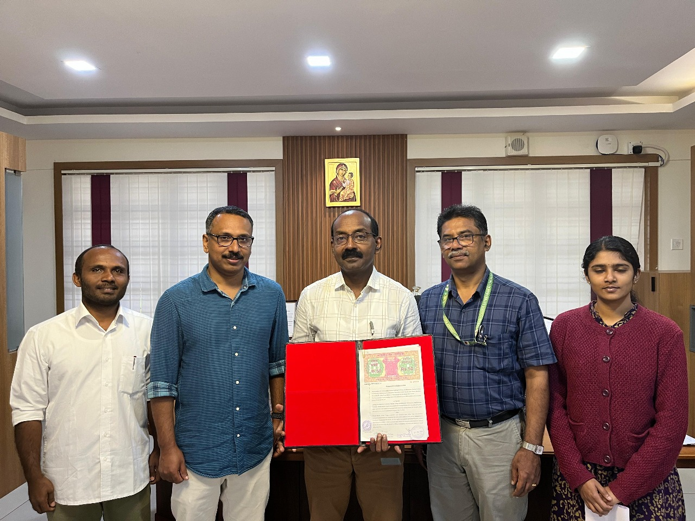

The Lifelong Learning and Extension (LLE) Department at Marian College Kuttikkanam (Autonomous) is dedicated to social development, skill enhancement, and community engagement. Our mission is to create inclusive learning opportunities beyond traditional education, empowering individuals for a better future.
we work in five thematic areas:
we are actively working with the following local Self-Government Institutions:
DR.HARI.R.S
Director,Lifelong Learning and Extension.
School of social Work, Marian College Kuttikkanam(Autonomous).